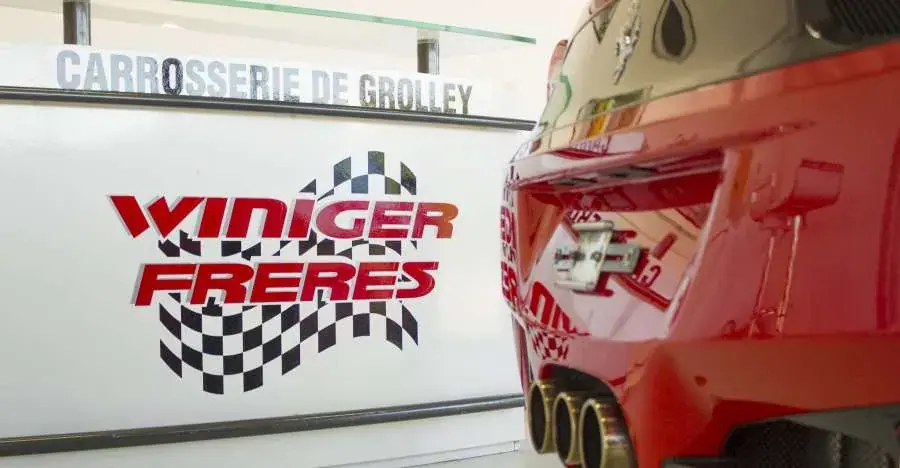
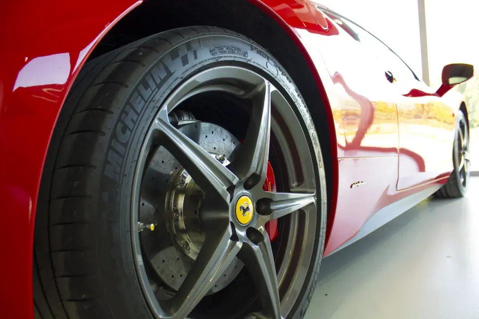

Carrosserie de Grolley · depuis 2004
La précision pour passion.
Depuis 2004, Winiger Frères met son savoir-faire au service de l'automobile à Grolley.

Route de l'Industrie-Ouest 11 — 1772 Grolley
- Fondation
- 2004
- Atelier
- Grolley · Fribourg
- Agrément
- TESLA Approved Body Shop
- Prestations
- Carrosserie · Prestige · Gardiennage · Lavage

S2 / Notre histoire
Deux frères,
une passion.
L'entreprise est née en 2004 de la passion de deux frères pour l'automobile.
Cette passion les a conduits à se spécialiser dans la réparation toutes marques, la restauration et la compétition. Aujourd'hui, la Carrosserie de Grolley réunit l'atelier, un espace de gardiennage et une station de lavage dans la zone industrielle de Grolley.
- 01Richard Winiger
- 02Fabrice Winiger
Portraits & parcours des frères à fournir
Notre entrepriseS3 / Carrosserie & savoir-faire
Toutes marques.
Tous travaux.
Un personnel constamment formé aux exigences de toutes les marques, et un accompagnement dans l'annonce et la gestion des sinistres.
- C01 Réparation toutes marques Personnel constamment formé aux exigences de toutes les marques. Accompagnement dans l'annonce et la gestion des sinistres.
- C02 Tous travaux de carrosserie Tôlerie, redressage, remplacement d'éléments, avec un outillage de dernière génération.
- C03 Débosselage Remise en forme des éléments de carrosserie déformés.
- C04 Peinture & finition Peinture au four, finitions mates et peinture de véhicules anciens, travaillées dans les règles de l’art.
- C05 Vitrages Réparation et remplacement de pare-brise, lunettes arrière et vitres latérales. Teintage de vitres.
- C06 Véhicules de remplacement Des voitures de remplacement récentes pendant la durée des travaux.
- C07 Prestations complémentaires Remplissage de climatisation et conseils personnalisés. Prise en charge du véhicule sur le lieu de votre choix, accompagnement à domicile ou au travail et devis : gratuits.


- Facilité avec les assurances
- Voitures de remplacement récentes
- Qualité garantie FCR
- Devis gratuits
S4 / Prestige, collection & compétition
Sport,
prestige
& collection

Spécialisés dans les véhicules de sport, de prestige et de collection, nous avons obtenu la reconnaissance de nombreux représentants de marques de prestige.
Marques réparées régulièrement à l'atelier
Ferrari/Aston Martin/Maserati/Bentley/Porsche/Lamborghini
Liste publiée par l'entreprise — exemples de véhicules réparés, sans partenariat de marque.

Approved
Body Shop Depuis mai 2021
Membre du réseau d'ateliers de carrosserie approuvés par TESLA. Une formation spécifique pour réparer des véhicules électriques en aluminium et acier, et les systèmes haute tension, dans le respect des standards de la marque.
- Étalonnage
- Calibrage du radar après toute intervention sur le capteur
- Tôlerie
- Réparation sans chaleur ni vibration excessives près des capteurs à ultrasons
- Peinture
- Épaisseur limitée à 300 microns dans la zone des capteurs

S5 / Gardiennage automobile
Au chaud.
À l'abri.
En sécurité.
Pour les véhicules de collection, de prestige, de sport ou de compétition : un sous-sol chauffé, accessible par ascenseur, doté d'infrastructures modernes et sécurisées, spécialement réservé au gardiennage des véhicules.
- Durée
- D'un mois à une année
- Restitution
- Véhicule restitué en parfait état, nettoyé intérieur et extérieur.
- Tarif
- Dès CHF 200.– par mois · Hivernage 6 mois CHF 1'000.–
S6 / Station de lavage
Le soin
jusqu'au dernier
détail.
Tunnel de lavage dernière génération, sur la même route que la carrosserie. Pour un lavage soigneux et efficace.
- Installation
- Tunnel de lavage dernière génération
- Adresse
- Route de l'Industrie-Ouest 7, 1772 Grolley
- Tarif
- dès CHF 10.– à confirmer
- Horaires
- À compléter
- Paiement
- À compléter


S7 / Contact
Ligne
d'arrivée.
Carrosserie de Grolley
Route de l'Industrie-Ouest 11
1772 Grolley
| Lundi — Jeudi | 07:00 – 12:00 13:30 – 18:00 |
|---|---|
| Vendredi | 07:00 – 13:30 non-stop |
| Samedi | Sur rendez-vous, 08:00 – 12:00 |
| Dimanche | Fermé |